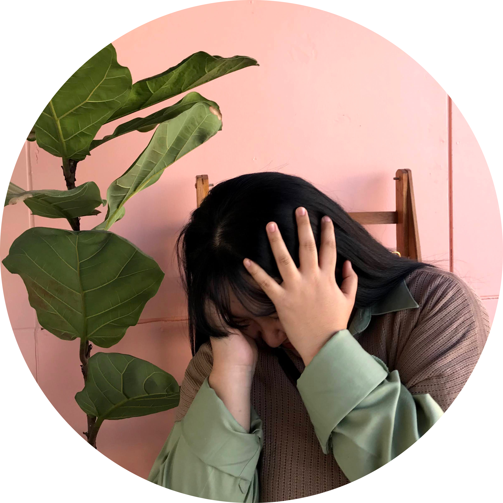

Profile |
Experiences |
Abilities |
Projects |
Contact |
About meMy name is Nalinnipa Thikaew. or you can call me Nei.I was born on 30 June 2001,So i'm 20 years old now. I'm come from Chiang Rai,Thailand.I can play Guitar,Clarinet and a little bit Musical Keyboard.I like to listening to music.I'm a student in Multimedia and Entertainment Engineering at Bangkok University. I want to be a Sound,Creative Multimedia Engineering afther graduation. I am a fandom of neo culture technology,I have a dream to work with them in sm entertainment a Creative Multimedia Engineering that can change the k-pop for the bettter in the future.I hope everthing will be come true. Website: Neilin.jpg Email: nalinnipa.thik@bumail.net |
 |
DetailsName: Nalinnipa Thikaew Location: Thailand Social Media: |
|---|
© 2021 Nalinnipa Profile Site